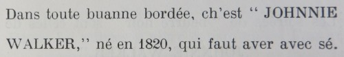

Pendant la plianterie, rein de dithèt pouor encouoragi que L'RHUM de siez Le Masurier.
Quand ch'est l'flu ou autre dithèt maladie, un p'tit de cognac LAMOTHE *** vos f'ra grand bein. Y faut tréjous en avèr sièz-sé. Vous pouvez l'acater à la boutique.
Pouor n'pon aver l'flu ou un fraid, deux d'gouts de RHUM de siez Le Masurier est l'millieur de tout.
Si vous allez à la pêque à basse iau un flask d'RHUM de siez Le Masurier vous empêchera d'être happé par une suée d'fraid.
Votre hardelle aimera bein un p'tit d'PORT CROFT'S de siez Le Masurier et chunna ly f'ra grand plaisi pour seur.
Pouor l'brancage, deux ou trais d'gouts de LAMOTHE *** vous ravigotera pouor faithe chu travas. Ch'est de siez Le Masurier et ch'est de tchi buan.
Es shows, pouor fathe pliaisi à vos amins ce s'ra un "JOHNNIE WALKER."
Quand vous avez une forte job, d'mandez au Vièrr "JOHNNIE WALKER," né en 1820 d'vous bailler un coup d'main.
Pendant la saison des patates deux d'gouts d'GIN de siez Le Masurier. N'v'là qui renforche.
Ch'est de sièz Le Masurier qu'nous a les milleurs litcheurs et d'mandez les à la boutique.
Es neuches, y faut tréjous de tchi bon et rein dithèt que l'SHERRY et l'PORT de siez Le Masurier, qui sont chein qu'il y a de milleur.

Touotes les litcheurs de sièz Le Masurier sont chein qu'il y a de milleur, et y faut les aver.
A la batterie faut d'la cognac LAMOTHE *** de siez Le Masurier.
LITCHEURS
Pouor les siens qui n'aiment que chein qu'est buan, d'mandez les litcheurs de siez Le Masurier.
Pouor un baptême, l'IEAU D'CANNELLE est d'coutume et vous pourrez en avèr siez Le Masurier.

Es élections faut plumper pouor "JOHNNIE WALKER," un vièr gars solide, né en 1820 et tréjous prumi.

Chaque fais qu'nous vos offrira à bêthe, d'mandez un "JOHNNIE WALKER," de sièz Le Masurier.
Es vendues rein de dithèt que "JOHNNIE WALKER" pouor faithe monter les prix.
Dans toute buanne bordée, ch'est "JOHNNIE WALKER," né en 1820, qui faut aver avec sé.

Pouor les séthées d'nièrr beurre ch'est l'amin "JOHNNIE WALKER" qui faut pouor vos ravigoter.

Es Carnavas faut "JOHNNIE WALKER," chu vièr, né en 1820 et tréjous en avant.
Un p'tit de LAMOTHE *** ou de PORT CROFT'S ravigotera les vièrrs et vous l'acaterez siez Le Masurier, qui ne vend que tchi bon.
Pouor fêter Noué, un raid buan port est l'sien CROFT'S de siez Le Masurier; ch'est l'milleur.
Viyiz étout: